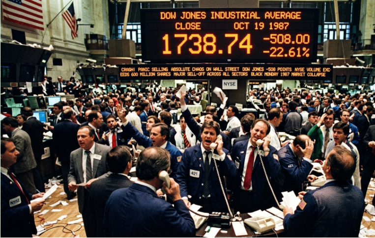

표지
두꺼비집이
계속 내려간다
28년간 6번 걸리던 장치가 올해만 9번 걸렸다.
서킷브레이커 · 국민연금
서킷브레이커는 28년간 6번 걸렸습니다. 올해는 7개월 만에 9번입니다. 그리고 예전과 달리 국민연금이 받아주지 않고 있습니다.
28년간 6번 걸리던 장치가 올해만 9번 걸렸다.
1987블랙먼데이에 다우가 하루 22.6% 폭락했다.
뉴욕증권거래소가 낸 아이디어는 단순했다 — 전기 과부하에 두꺼비집이 내려가듯, 증시에도 두꺼비집을 달자.폭락하면 강제로 장을 멈춰 냉정을 되찾을 시간을 주자는 것.
1998IMF 이후 외국인 자금을 끌어오려 상하한가를 12%에서 15%로 넓혔다.
문턱을 넓히면 폭락 위험도 같이 커진다. 그 안전장치로 1998년 12월 서킷브레이커를 도입했다.
첫 발동은 2000년 닷컴버블 붕괴, 두 번째는 2001년 9·11 테러.
블랙먼데이나 9·11급이 터져야 걸리는 장치였다는 뜻이다.2015년 상하한가가 30%로 확대되며 8%·15%·20% 세 단계로 바뀌었다.
2025년 이전, 서킷브레이커가 걸리면 국민연금이 출동했다.
2020년 3월 5,730억·3,800억, 2024년 8월 2,360억 매수. 6번 모두 기금을 넣어 시장을 진정시켰다.
2026년 1~7월에만 9번 발동. 그중 국민연금이 매도를 택한 것이 5번이다.
샀다 해도 6월 8일 480억, 7월 7일 290억 수준.살 돈이 없었다. 리밸런싱을 제때 못 해 매수 여력이 바닥났기 때문이다.
6월 19일 코스피 9,100에서 연초 대비 평가이익이 314조 원이었다.
코스피 5,663인 오늘 기준으로 다시 계산하면 95조 원. 219조 원이 증발했다.평가이익을 실현(리밸런싱)하지 못하는 사이 숫자만 남았다가 사라진 것.
복지부 추정으로 연금 소진 시기를 1년 늦추는 데 49조 원이 든다.
한때 국민연금은 소진 시기를 6.4년 늦춘 상태였다 (314÷49).
지금은 1.9년이다 (95÷49).
“국민연금의 제1책무는 기금을 잘 운용해서 국민의 노후를 책임지는 것이다. 우선순위가 뭔지를 기억해야 한다.”
1987년 10월 19일 월요일, 뉴욕증시의 다우존스가 하루에 22.6% 폭락했습니다. 블랙먼데이입니다. 이때 뉴욕증권거래소가 낸 아이디어가 서킷브레이커였어요. 집안 전기가 과부하되면 두꺼비집 스위치가 떨어지듯, 증시에도 두꺼비집을 달자는 겁니다. 일정 수준 이상 폭락하면 강제로 장을 멈추고 투자자들이 냉정을 되찾을 시간을 주자는 목적이었죠.

한국은 1997년 IMF 외환위기 이후 주식시장 문턱을 넓힙니다. 1998년 12월, 외국인 자금을 끌어오는 방법의 하나로 상하한가를 12%에서 15%로 올렸어요. 그런데 상하한가 폭이 넓어지면 폭락장의 위험도 함께 커집니다. 그 안전장치로 같은 달 서킷브레이커를 도입한 겁니다.
첫 발동은 2000년 4월, 닷컴버블 붕괴로 코스피가 하루 11.6% 빠졌을 때였습니다. 두 번째는 2001년 9월 12일, 9·11 테러 직후였고요. 블랙먼데이나 9·11 정도가 터져야 걸리는 장치였다는 뜻입니다. 2015년 상하한가가 30%로 확대되면서 8%·15%·20% 세 단계로 바뀌었고, 도입 이후 지금까지 총 15회 발동됐습니다.
2025년 이전에는 서킷브레이커가 발동되면 국민연금이 출동했습니다. 2020년 3월 13일 5,730억 원, 3월 19일 3,800억 원, 2024년 8월 5일에도 2,360억 원을 매수했죠. 1998년부터 2025년까지 6번의 발동에서 6번 모두 기금을 투입해 시장을 진정시켰습니다.
2026년은 1~7월에만 서킷브레이커가 9번 걸렸습니다. 그리고 그 9번 중 국민연금이 매수가 아니라 매도를 선택한 것이 5번입니다. 매수했다고 해도 6월 8일 480억 원, 7월 7일 290억 원 수준으로 미미했고요.
이유는 단순합니다. 살 돈이 없었습니다. 리밸런싱을 제때 하지 못해 매수 여력이 없었던 거죠. 7월이 되어서야 코스피가 충분히 낮아지면서 국내주식 보유 비중이 자연스럽게 한도 안으로 떨어졌고, 그제서야 7월 28일 1,160억, 29일 3,380억 원으로 본격 매수에 나서고 있습니다.
올해 6월 19일 코스피 9,100에서 국민연금은 연초 대비 평가이익 314조 원을 내고 있었습니다. 코스피가 5,663으로 떨어진 지금 기준으로 다시 계산하면 95조 원입니다. 219조 원이 사라진 셈이죠. 평가이익을 실현하지 못하는 사이 숫자만 남았다가 증발한 겁니다.
이 219조가 얼마나 큰지는 이렇게 환산됩니다. 보건복지부 추정으로 연금 소진 시기를 1년 늦추는 데 49조 원이 필요합니다. 한때 국민연금은 소진 시기를 6.4년 늦춘 상태였습니다(314÷49). 지금은 1.9년입니다(95÷49).
“국민연금의 제1책무는 기금을 잘 운용해서 국민의 노후를 책임지는 것이다. 우선순위가 뭔지를 기억해야 한다.”